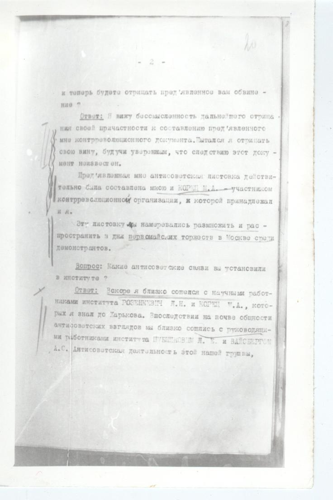
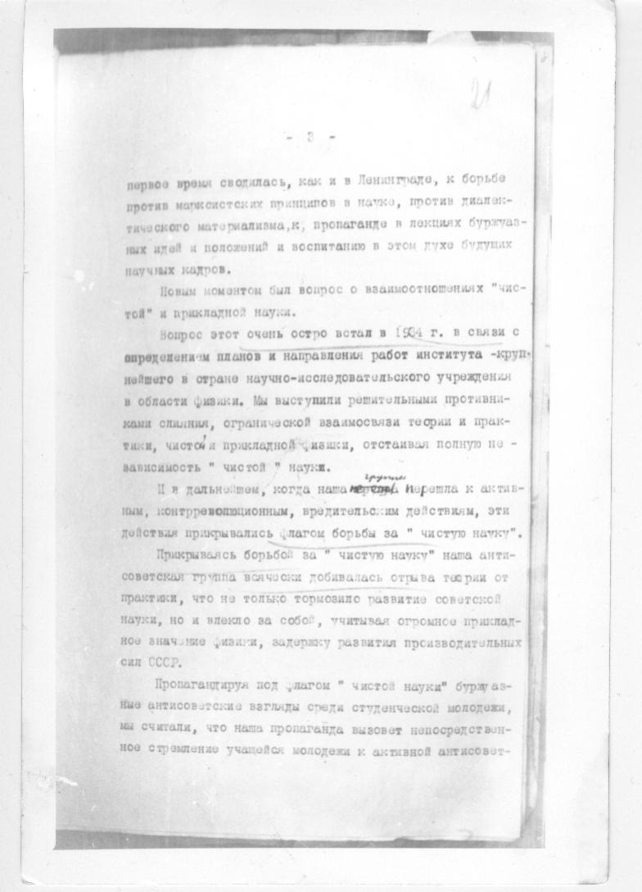
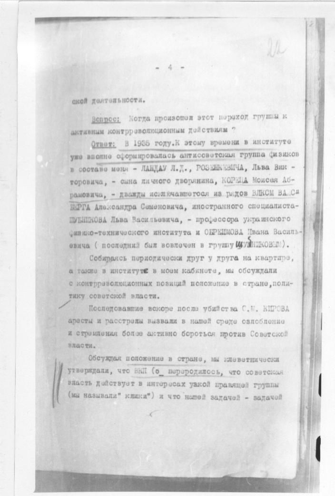
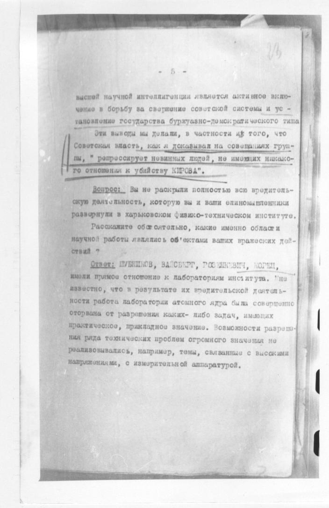
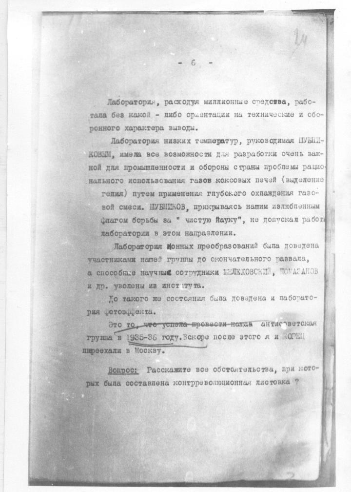
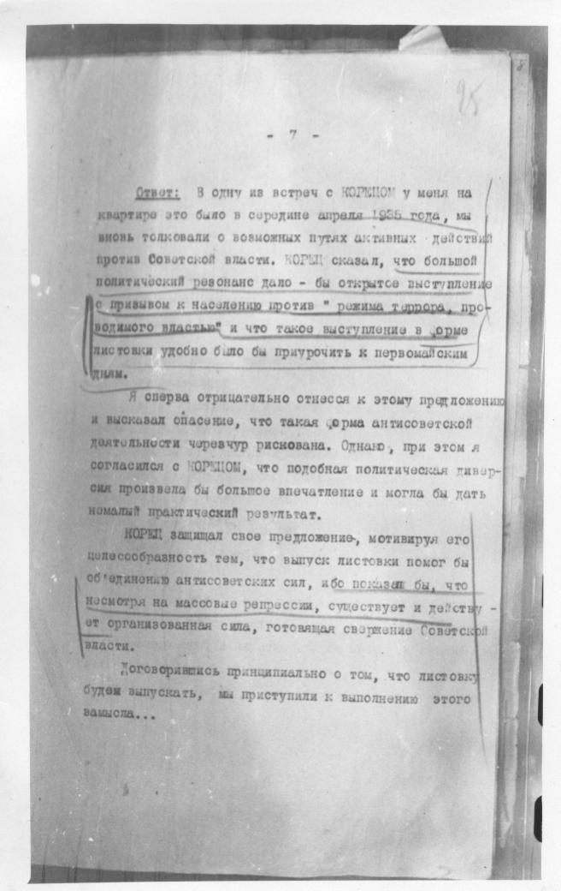
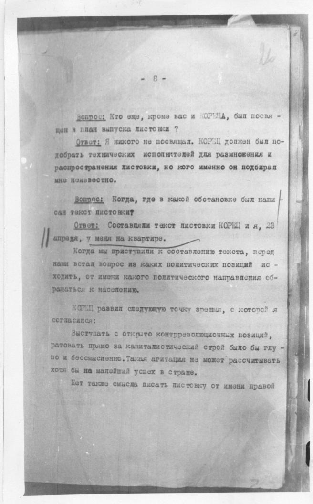
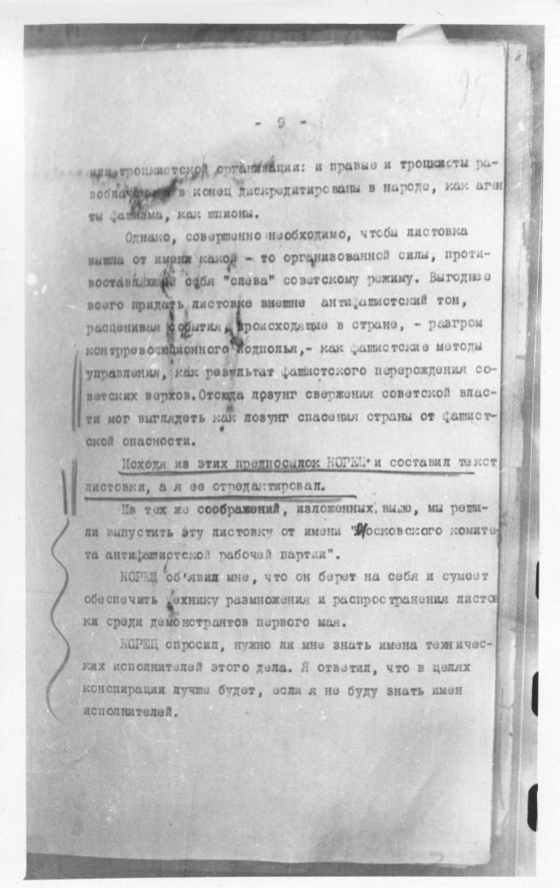
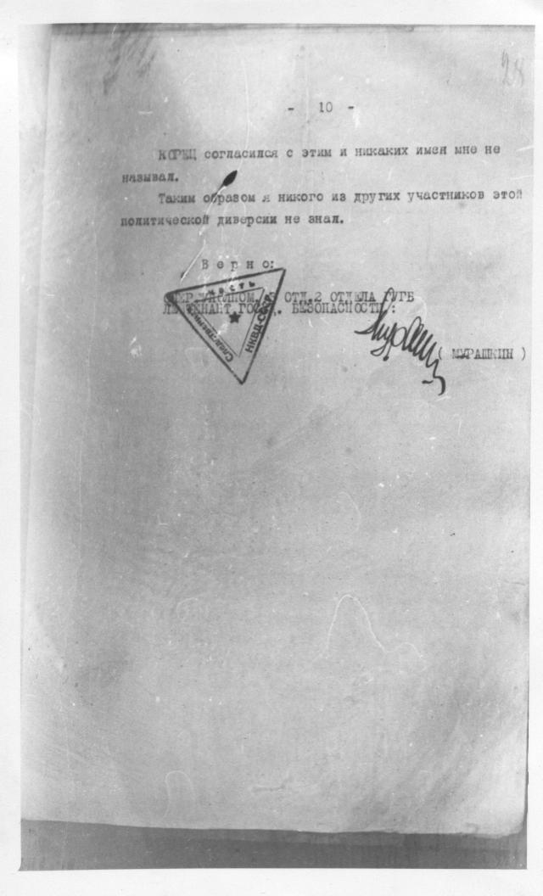

19
ВЫПИСКА ИЗ ПРОТОКОЛА ДОПРОСА
ЛАНДАУ, Льва Давидовича.
От 3 августа 1938 года.
ЛАНДАУ Л.Д., 1908 г.р., ур.г.Баку,
сын инженера, служащий беспартий-
ный, еврей, гр-н СССР, до ареста
профессор физики, ст.научный сотруд-
ник ин-та физических проблем Акаде-
мии Наук СССР.
Вопрос: Мы еще раз предлагаем вам дать правди-
вые показания относительно вашей антисоветской дея-
тельности?
Ответ: Мне нечего показывать.
Вопрос: Пред'являем вам документ - текст анти-
советской листовки за подписью "Московский комитет
антифашистской рабочей партии".
Вам знаком этот почерк? Чьей рукой написана
листовка?
Ответ: Да, знаком. Это почерк физика М.А. КОРЕЦ,
которого я хорошо знаю.
Вопрос: КОРЕЦ показывает, что контрреволюционная
листовка написана им и утверждает, что вы являетесь
одним из авторов этого антисоветского документа. Вы
стр. 20

- 2 -
20
и теперь будете отрицать пред'явленное вам обвине-
ние?
Ответ: Я вижу бессмысленность дальнейшего отрица-
ния своей причастности к составлению пред'явленного
мне контрреволюционного документа. Пытался я отрицать
свою вину, будучи уверенным, что следствию этот доку-
мент неизвестен.
Пред'явленная мне антисоветская листовка действи-
тельно была составлена мною и КОРЕЦ М.А. - участником
контрреволюционной организации, к которой принадлежал
и я.
Эту листовку мы намеревались размножить и рас-
пространить в дни первомайских торжеств в Москве среди
демонстрантов.
Вопрос: Какие антисоветские связи вы установили
в институте?
Ответ: Вскоре я близко сошелся с научными работ-
никами института РОЗЕНКЕВИЧ Л.В. и КОРЕЦ М.А., кото-
рых я знал до Харькова. Впоследствии на почве общности
антисоветских взглядов мы близко сошлись с руководящи-
ми работниками института ШУБНИКОВЫМ Л.В. и ВАЙСБЕРГОМ
А.С. Антисоветская деятельность этой нашей группы,
стр. 21

- 3 -
21
первое время сводилась, как и в Ленинграде, к борьбе
против марксистских принципов в науке, против диалек-
тического материализма, к пропаганде в лекциях буржуаз-
ных идей и положений и воспитанию в этом духе будущих
научных кадров.
Новым моментом был вопрос о взаимоотношениях "чис-
той" и прикладной науки.
Вопрос этот очень остро встал в 1934 г. в связи с
определением планов и направления работ института -круп-
нейшего в стране научно-исследовательского учреждения
в области физики. Мы выступили решительными противни-
ками слияния, органической взаимосвязи теории и прак-
тики, чистой и прикладной физики, отстаивая полную не-
зависимость "чистой" науки.
И в дальнейшем, когда наша [нрзб] группы перешла к актив-
ным, контрреволюционным, вредительским действиям, эти
действия прикрывались флагом борьбы за "чистую науку".
Прикрываясь борьбой за "чистую науку" наша анти-
советская группа всячески добивалась отрыва теории от
практики, что не только тормозило развитие советской
науки, но и влекло за собой, учитывая огромное приклад-
ное значение физики, задержку развития производительных
сил СССР.
Пропагандируя под флагом "чистой науки" буржуаз-
ные антисоветские взгляды среди студенческой молодежи,
мы считали, что наша пропаганда вызовет непосредствен-
ное стремление учащейся молодежи к активной антисовет-
стр. 22

- 4 -
22
ской деятельности.
Вопрос: Когда произошел этот переход группы к
активным контрреволюционным действиям?
Ответ: В 1935 году.К этому времени в институте
уже вполне сформировалась антисоветская группа физиков
в составе меня - ЛАНДАУ Л.Д., РОЗЕНКЕВИЧА, Льва Вик-
торовича, - сына личного дворянина, КОРЕЦА Моисея Аб-
рамовича, - дважды исключавшегося из рядов ВЛКСМ ВАЙС-
БЕРГА Александра Семеновича, иностранного специалиста-
ШУБНИКОВА Льва Васильевича, - профессора украинского
физико-технического института и ОБРЕИМОВА Ивана Василь-
евича (последний был вовлечен в группу ШУБНИКОВЫМ).
Собираясь периодически друг у друга на квартире,
а также в институте в моем кабинете, мы обсуждали
с контрреволюционных позиций положение в стране, поли-
тику советской власти.
Последовавшие вскоре после убийства С.М. КИРОВА
аресты и расстрелы вызвали в нашей среде озлобление
и стремления более активно бороться против Советской
власти.
Обсуждая положение в стране, мы клеветнически
утверждали, что ВКП (б) переродилось, что советская
власть действует в интересах узкой правящей группы
(мы называли" клика") и что нашей задачей - задачей
стр. 23

- 5 -
23
высшей научной интеллигенции является активное вклю-
чение в борьбу за свержение советской системы и ус-
тановление государства буржуазно-демократического типа
Эти выводы мы делали, в частности из того, что
Советская власть, как я доказывал на совещаниях груп-
пы, "репрессирует невинных людей, не имеющих никако-
го отношения к убийству КИРОВА".
Вопрос: Вы не раскрыли полностью всю вредитель-
скую деятельность, которую вы и ваши единомышленники
развернули в харьковском физико-техническом институте.
Расскажите обстоятельно, какие именно области
научной работы являлись об'ектами ваших вражеских дей-
ствий?
Ответ: ШУБНИКОВ, ВАЙСБЕРГ, РОЗЕНКЕВИЧ, КОРЕЦ,
имели прямое отношение к лабораториям института. Мне
известно, что в результате их вредительской деятель-
ности работа лаборатории атомного ядра была совершенно
оторвана от разрешения каких-либо задач, имеющих
практическое, прикладное значение. Возможности разреше-
ния ряда технических проблем огромного значения не
реализовывались, например, темы, связанные с высокими
напряжениями, с измерительной аппаратурой.
стр. 24

- 6 -
24
Лаборатории, расходуя миллионные средства, рабо-
тала без какой - либо ориентации на технические и обо-
ронного характера выводы.
Лаборатория низких температур, руководимая ШУБНИ-
КОВЫМ, имела все возможности для разработки очень важ-
ной для промышленности и обороны страны проблемы рацио-
нального использования газов коксовых печей (выделение
гелия) путем применения глубокого охлаждения газо-
вой смеси. ШУБНИКОВ, прикрываясь нашим излюбленным
флагом борьбы за "чистую Науку", не допускал работы
лаборатории в этом направлении.
Лаборатория ионных преобразований была доведена
участниками нашей группы до окончательного развала,
а способные научные сотрудники ЖЕЛЕХОВСКИЙ, ПОГАСАНОВ
и др. уволены из института.
До такого же состояния была доведена и лаборато-
рия фотоэффекта.
Это то, что успела провести наша антисоветская
группа в 1935-36 году.Вскоре после этого я и КОРЕЦ
переехали в Москву.
Вопрос: Расскажите все обстоятельства, при кото-
рых была составлена контрреволюционная листовка?
стр. 25

- 7 -
25
Ответ: В одну из встреч с КОРЕЦОМ у меня на
квартире это было в середине апреля 1935 года, мы
вновь толковали о возможных путях активных действий
против Советской власти. КОРЕЦ сказал, что большой
политический резонанс дало - бы открытое выступление
с призывом к населению против "режима террора, про-
водимого властью" и что такое выступление в форме
листовки удобно было бы приурочить к первомайским
дням.
Я сперва отрицательно отнесся к этому предложению
и высказал опасение, что такая форма антисоветской
деятельности чересчур рискована. Однако, при этом я
согласился с КОРЕЦОМ, что подобная политическая дивер-
сия произвела бы большое впечатление и могла бы дать
немалый практический результат.
КОРЕЦ защищал свое предложение, мотивируя его
целесообразность тем, что выпуск листовки помог бы
об'единению антисоветских сил, ибо показал бы, что
несмотря на массовые репрессии, существует и действу-
ет организованная сила, готовящая свержение Советской
власти.
Договорившись принципиально о том, что листовку
будем выпускать, мы приступили к выполнению этого
замысла...
стр. 26

- 8 -
26
Вопрос: Кто еще, кроме вас и КОРЕЦА, был посвя-
щен в план выпуска листовки?
Ответ: Я никого не посвящал. КОРЕЦ должен был по-
добрать технических исполнителей для размножения и
распространения листовки, но кого именно он подбирал
мне неизвестно.
Вопрос: Когда, где в какой обстановке был напи-
сан текст листовки?
Ответ: Составляли текст листовки КОРЕЦ и я, 23
апреля, у меня на квартире.
Когда мы приступили к составлению текста, перед
нами встал вопрос из каких политических позиций ис-
ходить, от имени какого политического направления об-
ращаться к населению.
КОРЕЦ развил следующую точку зрения, с которой я
согласился:
Выступать с открыто контрреволюционных позиций,
ратовать прямо за капиталистический строй было бы глу-
по и бессмысленно. Такая агитация не может рассчитывать
хотя бы на малейший успех в стране.
Нет также смысла писать листовку от имени правой
стр. 27

- 9 -
27
или троцкистской организации: и правые и троцкисты ра-
зоблачены [нрзб] в конец дискредитированы в народе, как аген-
ты фашизма, как шпионы.
Однако, совершенно необходимо, чтобы листовка
вышла от имени какой - то организованной силы, проти-
вопоставляющей себя "слева" советскому режиму. Выгоднее
всего придать листовке внешне антифашистский тон,
расценивая события, происходящие в стране, - разгром
контрреволюционного подполья, - как фашистские методы
управления, как результат фашистского перерождения со-
ветских верхов. Отсюда лозунг свержения советской влас-
ти мог выглядеть как лозунг спасения страны от фашист-
ской опасности.
Исходя из этих предпосылок КОРЕЦ и составил текст
листовки, а я ее отредактировал.
На тех же соображениях, изложенных выше, мы реши-
ли выпустить эту листовку от имени "Московского комите-
та антифашистской рабочей партии".
КОРЕЦ объявил мне, что он берет на себя и сумеет
обеспечить технику размножения и распространения листов-
ки среди демонстрантов первого мая.
КОРЕЦ спросил, нужно ли мне знать имена техничес-
ких исполнителей этого дела. Я ответил, что в целях
конспирации лучше будет, если я не буду знать имен
исполнителей.
стр. 28

- 10 -
28
КОРЕЦ согласился с этим и никаких имен мне не
называл.
Таким образом я никого из других участников этой
политической диверсии не знал.
Верно:
ОПЕРУПОЛНОМ. 3 ОТД. 2 ОТДЕЛА ГУГБ
ЛЕЙТЕНАНТ ГОСУД. БЕЗОПАСНОСТИ:
[печать]
[подпись] (МУРАШКИН)
Текст снят со снимков дела. Неразобранные слова отмечены [нрзб]. Там, где страница слишком бледная, оставлен только снимок.